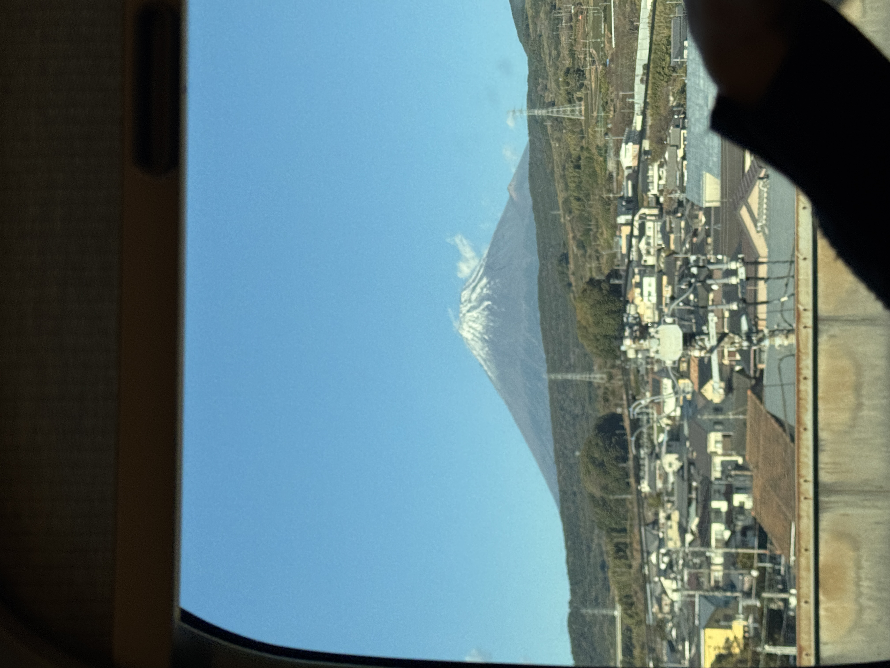
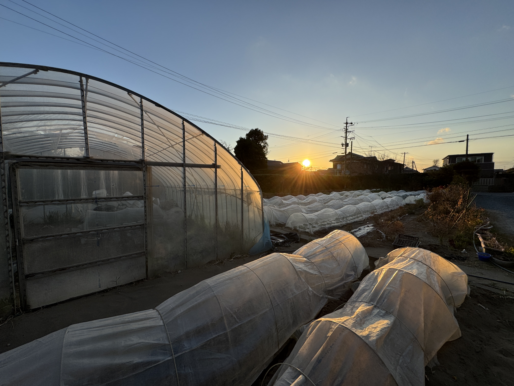
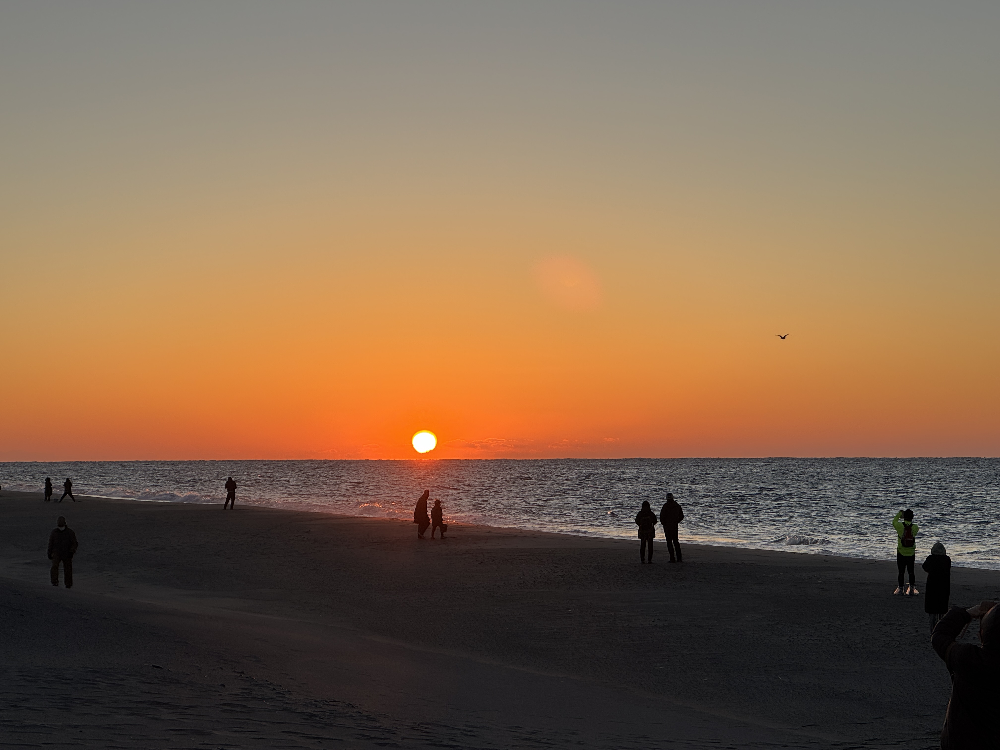
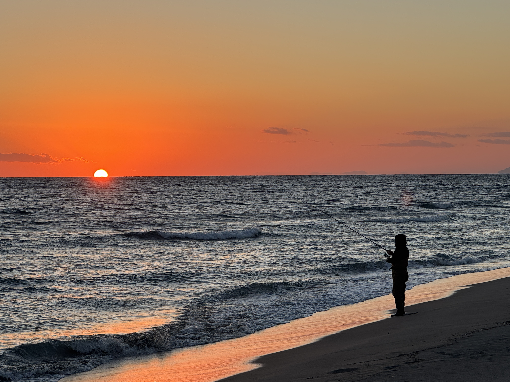
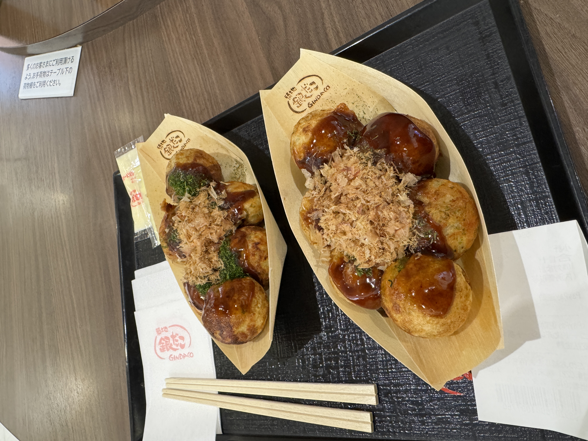
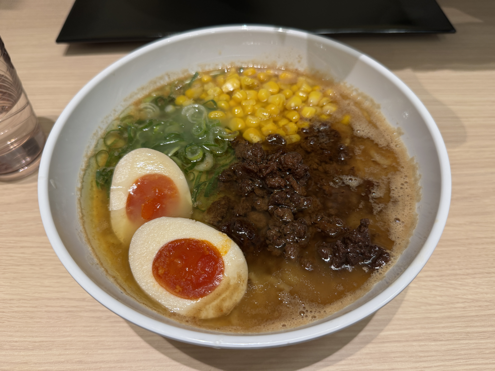

THIS IS NOT FINAL, JUST NOTES FOR MYSELF TO REMEMBER WHAT I DID.
12-30-24
- Landed at 5:25 AM in Tokyo (Haneda) Airport on December 30, 2024.
- I took the train to the Shinagawa Station then to the Fukiage Station to my Dad's house in Saitama.
- I arrived early at around 7:30 AM and ate Japanese white bread with butter and peach jam and a hard-boiled egg.
-
I relaxed for a bit and took a quick nap before lunch time where my Dad and I went to a ramen shop. I got a shrimp miso ramen and some karaage.
- Afterwards, we went to the home goods store to buy some tools to do some repairs back at the house.
- Once we returned home, we relaxed for a bit watching Japanese TV.
- At around 6:00 PM, I took a shower and warm bath.
- We ate dinner at around 8:00, and I ate my leftover karaage from the ramen restaurant
- I went to bed around 10:00 PM.
12-31-24
- I woke up around 7:00 AM and ate a similar breakfast of white bread. This time we put Japanese mayo and cheese on one of them. I ate this alongside a hardboiled egg and some black tea.
- A bit after 11:00, I had a train to catch to the Tokyo Station.
- Once there, I bought two onigiris and a tonkatsu sandwhich.
- From the Tokyo Station, I rode the bullet train (Shinkansen) to the Hamamatsu Station. On this train, I ate my lunch.
-
On my way to Hamamatsu, I saw Mt. Fuji.

- At the Hamamatsu station, my Aunt picked me up and drove me to her house where I will stay for the next couple of days.
- After discussing family plans, I did a couple of chores outside.
-
We also visited my Grandma's house to pick some radishes for tomorrow's New Years celebration.


- Then, we ate soba for dinner, which is traditionally eaten on New Years Eve.
1-1-25
-
This morning, I woke up at 5:30 AM to watch the first sunrise of 2025. We walked to the beach to see it.

- Afterwards, we went to a temple.
- Then, we returned home to eat mochi and ozoni which is a traditional Japanese soup eaten on New Years.
-
Next, we walked over to my grandmother's house to say hi to her and my other Aunt.
My grandma seemed very happy and excited to see me even though she has trouble remember who I was. She has lots of joy and it was very heartwarming!
- Most of this day was free time. For lunch I ate instant ramen which had meat sealed inside.
-
Before dinner, my cousin and I went to see the sunset at the beach. Also took one of my favorite pictures.

-
Afterwards, we went window shopping at a mall. We also got takoyakis.

2-2-25
- Today, we went to my Uncle's mother's grave in the mountains.
-
After, we went to the rice fields in the mountains. It required a bit of a hike, but it was super cool to see.
Because Japan's geographical area is small with many mountaineous regions, rice farms like these were built to maintain the supply and demand of rice in Japan.
Unfortunately, the farming industry in Japan is having trouble replacing the current workforce.
There was also a TV show recorded about here.
This is 1/100 mountaineous rice fields (I still need to translate these).
-
Next, we went to the mall for lunch. We got ramen. This is a miso ramen.
